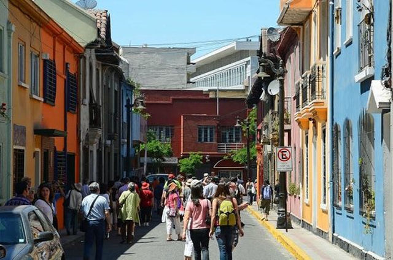
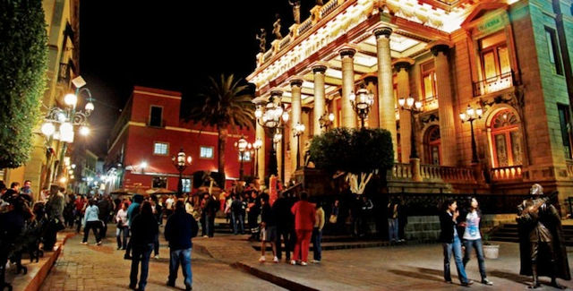
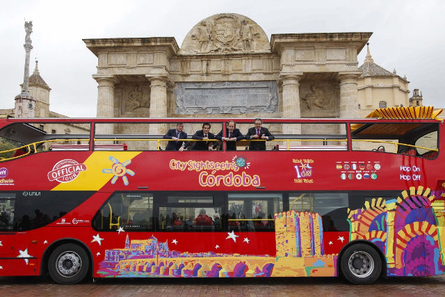

Introducción
Turismo urbano es el fenómeno emergente que está reconfigurando y creando en la ciudad un poder atractivo y un elemento determinante en la configuración de la demanda turística.
Los principios de este fenómeno se sitúan en la antigüedad, cuando los comerciantes salían a intercambiar sus productos, para ofrecerlos en mercados y lugares de concurrencia. Con el paso del tiempo los estudiantes de aquella época, acudían de visita a diferentes universidades para diversificar su conocimiento y asistir a pláticas con los eruditos de la época.
Por los siglos XV-XVII surgió un movimiento donde los jóvenes de cierto status social acudían en busca de enriquecer su conocimiento a visitar diferentes destinos históricos de las ciudades, buscando sitios con orígenes, así como diferentes puntos de interés como los museos de esa época, en donde se exhibían grandes piezas de arte. Sin embargo, estos viajes eran largos y difíciles ya que se encontraban con sitios donde sólo se convivía con el medio natural, donde no existía aún la mano del hombre, como grandes montañas, ríos, además de que el clima era otro factor determinante para esto.
Recorrer grandes distancias con viajes que duraban hasta semanas, con caminos peligrosos y estrechos hizo que convivir con la naturaleza fuera complicado. Después, su significado se reinterpretó, ya que los viajeros buscaban cada vez más salir de los paisajes urbanos, liberarse e inspirarse en los maravillosos paisajes que el medio natural les ofrecía, por lo que los artistas de la época basaron su inspiración en lo que los rodeaba.
Las grandes urbes comenzaron a notar que la percepción de los visitantes a la ciudad podía determinar la perspectiva de la situación económica, y en base a esto se empezaron a promover eventos culturales, artísticos y educacionales.
En busca de lugares más confortables
En 1850, se inició una nueva etapa dentro de los viajes, cuando el británico Thomas Cook (padre del turismo) inició el turismo masivo hacia una clientela obrera, y después formaría su agencia de viajes. Él formó paquetes para hacer recorridos por los sitios históricos así como atracciones culturales que las ciudades europeas ofrecían. Lo que hizo demarcaciones sobre los sitios y vistas que los visitantes debían conocer, nace así el turismo urbano. Esto condujo a que los turistas buscaran lugares más confortables, agradables y buenos servicios donde pudieran además tener grandes noches de descanso y diversión.
En el Siglo XX el turismo ya es un fenómeno social generalizado cada vez con más facilidades para la mayoría de las personas hacia diferentes destinos. Por lo que, se acentúa la Ciudad como un espacio en donde se propicien las innovaciones, expresiones de la personalidad cultural, difusión del conocimiento, actividades culturales, recreativas, etc.

Así, la Ciudad se convierte en un lugar encantador para los visitantes y para sus habitantes. A través de la articulación de diferentes actividades se puede dar un resultado fructífero y enriquecedor. De la misma manera se crea una demanda más exigente en factores como seguridad, mejores condiciones de movilidad, destinos con bajos costos, así como nuevas tecnologías de información.
El desarrollo de productos turísticos debe inspirarse en los valores culturales e históricos que existen dentro de las ciudades y los cuales sean distintivos de cada uno, ya que el turista se distingue cada vez por ser más crítico y exigente, por lo que se busca crear espacios auténticos, en base a una cultura arraigada a la sociedad y no que provenga del exterior. Por lo que las ciudades deben buscar desarrollar servicios que estén relacionados con la cultura y tradiciones así como la historia y el valor del lugar.
Según Michael Porter reconocido como padre de la estratégica moderna “La innovación es el motor de la prosperidad económica” y se estima que el número de atractivos culturales ha aumentado en los últimos 20 años en más de un 100% (Richards, 2003). Por lo que en base a estos datos la competencia ha crecido en mayor número y muchas de las ciudades están reaccionando innovando, incorporando cambios en estos elementos fundamentales del turismo tales como el patrimonio cultural, así como lugares con historia, el arte, y arquitectura contemporánea.
También se toman en cuenta aquellos elementos como la periferia, el contexto, el estilo de vida, la creencia, la cocina, tradiciones y el mundo del espectáculo pues son elementos importantes y distintivos del atractivo de una ciudad. Por lo que si una ciudad quiere ser atractiva no solo para los que la visitan por primera vez, si no para aquellos que acuden más veces, debe buscar innovar.
Las oportunidades
Además de gozar de un rico patrimonio histórico, las ciudades pueden ofrecer una ampliación y diversificación de actividades culturales y de ocio y placer. La creciente capacidad de llevar acabo importantes ferias de turismo en grandes ciudades en donde se convoca a miles de especialistas, profesionales y empresas es una gran evidencia de éxito económico en pro del desarrollo turístico.
Las diferencias culturales son un recurso potencial, además de ser un instrumento de integración ante la sociedad actual. La gastronomía, es un objeto de valor para muchas ciudades que gozan de platillos en donde los turistas buscan hacer recorridos para degustar las comidas locales que las ciudades o pueblos ofrecen.
Parte de los atractivos pueden ser los festivales de cultura, música o de cine, ya que ofrecen al turista una amplia muestra de contenido exclusivo y brindan otro motivo para visitar el lugar. Son un ejemplo de cómo atraer a los visitantes a un lugar al que nunca han ido, así como para los que lo visitan con más frecuencia.

Turismo y festivales
Dentro de los festivales más importantes que se realizan en México son aquellos que celebran la herencia y riqueza arqueológica que ofrecen las ciudades, por ejemplo en el Tajín en Veracruz se realizan ceremonias prehispánicas, conciertos, danzas y exposiciones de la cultura totonaca. El festival Vive Latino, en donde se presentan bandas de diversos géneros de música alternativa.
Otro ejemplo es la Feria Nacional del Queso y del vino que se realiza en Querétaro en donde se ofrece a los visitantes visitas guiadas de los principales ranchos y casas vitivinícolas, degustaciones, así como la oportunidad de aprender a elaborar queso y vino. El Festival Internacional Cervantino es otro ejemplo de los grandes festivales que se realizan en México, miles de turistas se dan cita en la Ciudad de Guanajuato, Patrimonio Cultural de la Humanidad (UNESCO, 1988) cada año para apreciar el sin fin de actividades y expresiones representativas de la música, danza, teatro, artes visuales, cine y literatura de diversos géneros y estilos. Todo ello debe de ir acompañado de la socialización y promoción de la información ya que gracias a las nuevas tecnologías el turista puede informarse acerca de todos los datos sobre la ciudad.
Las ciudades han hecho cada vez más atractivo su contexto urbano, cada vez se vuelven más modernas y tecnológicas, muchas de las ciudades antiguas han empezado a recuperar y revalorar su entorno histórico, patrimonios culturales que se convierten en atractivos para los visitantes.
Esto brinda una imagen agradable, con una gran calidad de vida para los que residen en el lugar como para los que la visitan, un ambiente hospitalario, se habilitan las áreas verdes con zonas de esparcimiento y se recuperan los espacios que se encuentran en abandono.
Gracias a esto se dota a las ciudades de una diversidad de actividades y servicios a la par que se moderniza su infraestructura. Sin embargo, hay ciudades modernas que no necesariamente cuentan con un patrimonio cultural pero sí con una excelente planificación de espacios, instalaciones, equipamiento y demás servicios. Es así que incluso ciudades enteramente dedicadas a la industria han sacado provecho del turismo.
¿Será acaso que visitar las ciudades es el vehículo de aprendizaje sobre la vida urbana y el modo en que las ciudades se crean y funcionan? Muchas personas que viajan a ciudades buscan, consciente o inconscientemente, la manera de adaptarse a la vida urbana o de potenciar la calidad de vida en su propia ciudad.

Referencias
- El Turismo Urbano y la Cultura, la experiencia europea.
- Organización Mundial del Turismo, Madrid, España.
- Una Aproximación al Turismo Urbano. El valor de la ciudad empaquetada en el caso de Valencia. Pau Rausell Köster.
- 10 de los festivales más importantes en México.